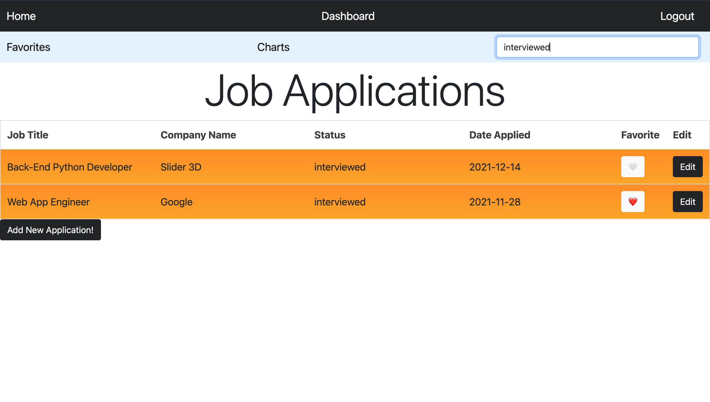

Job Application Tracker
This application was made to help job seekers organize and keep track of all job applications with a very simple yet intuitive interface.
Some of the features you can enjoy are:
- Create as many applications as needed
- Delete applications
- Color coded Job Application's status for better management
- Search through your Job Applications by Job Title, Company Name, or Status
- Favorite your most important applications and manage them from your own Favorites list
- Visualize all of your application through a Pie or Bars chart!
- Edit existing Job Applications
- Add extensive notes like POC information or Job Posting links
1 / 8
Manage your job applications
2 / 8
Add your most important applications to your favorites
3 / 8
Edit your applications
4 / 8

Create new applications
5 / 8
Search applications by Job Title
6 / 8

Search applications by Status
7 / 8

View your data in a Pie Chart
8 / 8
View your data in a Bar Chart